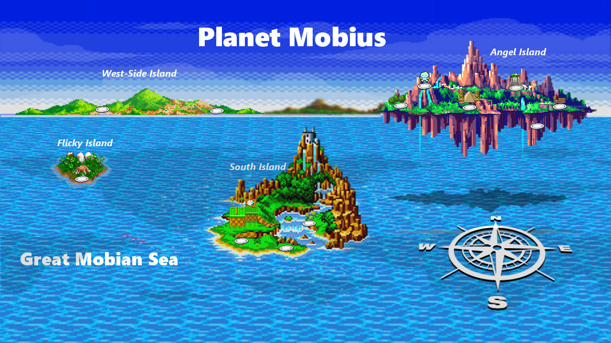

Ethan College Honk Gong
Here's to the ones that we got Cheers to the wish you were here, but you're not 'Cause the drinks bring back all the memories Of everything we've been through Toast to the ones here today Toast to the ones that we lost on the way 'Cause the drinks bring back all the memories And the memories bring back, memories bring back you There's a time that I remember, when I did not know no pain When I believed in forever, and everything would stay the same Now my heart feel like December when somebody say your name 'Cause I can't reach out to call you, but I know I will one day, yeah Everybody hurts sometimes Everybody hurts someday, aye aye But everything gon' be alright Go and raise a glass and say, aye Here's to the ones that we got Cheers to the wish you were here, but you're not 'Cause the drinks bring back all the memories Of everything we've been through Toast to the ones here today Toast to the ones that we lost on the way 'Cause the drinks bring back all the memories And the memories bring back, memories bring back you
Is this the real life? Is this just fantasy? Caught in a landslide, No escape from reality. Open your eyes, Look up to the skies and see, I'm just a poor boy, I need no sympathy, Because I'm easy come, easy go, Little high, little low, Any way the wind blows doesn't really matter to me, to me.
Aaow! Your butt is mine Gonna tell you right Just show your face In broad daylight I'm telling you On how I feel Gonna hurt your mind Don't shoot to kill Come on Come on Lay it on me All right I'm giving you On count of three To show your stuff Or let it be I'm telling you Just watch your mouth I know your game What you're about Well they say the sky's the limit And to me that's really true But my friend you have seen nothin' Just wait 'til I get through Because I'm bad, I'm bad come on You know I'm bad, I'm bad come on, you know You know I'm bad, I'm bad come on, you know And the whole world has to Answer right now Just to tell you once again Who's bad
Aaow!
I see a little silhouetto of a man, Scaramouche, Scaramouche, will you do the Fandango? Thunderbolt and lightning, Very, very frightening me. (Galileo) Galileo. (Galileo) Galileo, Galileo Figaro Magnifico-o-o-o-o. I'm just a poor boy, nobody loves me. He's just a poor boy from a poor family, Spare him his life from this monstrosity. Easy come, easy go, will you let me go? Bismillah! No, we will not let you go. (Let him go!) Bismillah! We will not let you go. (Let him go!) Bismillah! We will not let you go. (Let me go!) Will not let you go. (Let me go!) Never let you go (Never, never, never, never let me go) Oh oh oh oh No, no, no, no, no, no, no Oh, mama mia, mama mia (Mama mia, let me go.) Beelzebub has a devil put aside for me, for me, for me.
Never Gonna Give You Up Never Gonna Let You Down
It's a little bit funny this feeling inside I'm not one of those who can easily hide, I Don't have much money but boy if I did I'd buy a big house where we both could live If I was a sculptor, but then again no Or a man who makes potions in a traveling show Oh I know it's not much but it's the best I can do My gift is my song And this one's for you
It might seem crazy what I'm 'bout to say Sunshine she's here, you can take a break I'm a hot air balloon that could go to space With the air, like I don't care baby by the way Huh, because I'm happy Clap along if you feel like a room without a roof Because I'm happy Clap along if you feel like happiness is the truth Because I'm happy Clap along if you know what happiness is to you Because I'm happy Clap along if you feel like that's what you wanna do C'mon!
Billie Jean is not my lover She's just a girl who claims that I am the one (Oh, baby) But the kid is not my son, hoo! She says I am the one (Oh, baby) But the kid is not my son (Hee-hee-hee, no-no-no, hee-hee-hee) Hoo! She was more like a beauty queen from a movie scene I said, "Don't mind, but what do you mean, I am the one Who will dance on the floor in the round?" She said I am the one Who will dance on the floor, in the round She told me her name was Billie Jean As she caused a scene Then every head turned with eyes that dreamed of being the one Who will dance on the floor in the round People always told me, "Be careful of what you do Don't go around breaking young girls' hearts" (Hee-eeh) And mother always told me, "Be careful of who you love And be careful of what you do (Oh-oh) 'Cause the lie becomes the truth" (Oh-oh) Billie Jean is not my lover She's just a girl who claims that I am the one (Oh, baby) But the kid is not my son, hoo! She says I am the one (Oh, baby) But the kid is not my son (Hee-hee-hee, no-no-no, hee-hee-hee) Hoo!
The club isn't the best place to find a lover So the bar is where I go Me and my friends at the table doing shots Drinking fast and then we talk slow Come over and start up a conversation with just me And trust me I'll give it a chance now Take my hand, stop, put Van the Man on the jukebox And then we start to dance, and now I'm singing like Girl, you know I want your love Your love was handmade for somebody like me Come on now, follow my lead I may be crazy, don't mind me Say, boy, let's not talk too much Grab on my waist and put that body on me Come on now, follow my lead Come, come on now, follow my lead I'm in love with the shape of you We push and pull like a magnet do Although my heart is falling too I'm in love with your body
Up with it girl Rock with it girl Show dem it girl (Bada bang bang) Bounce with it girl Dance with it girl Get with it girl (Bada bang bang) Come on, come on, turn the radio on It's Friday night and I won't be long Gotta do my hair, I put my make up on It's Friday night and I won't be long Till I hit the dance floor (Bada bang) Hit the dance floor (Bada bang) I got all I need No, I ain't got cash, I ain't got cash But I got you baby (Just you an me) Baby I don't need dollar bills to have fun tonight (I love cheap thrills!) Baby I don't need dollar bills to have fun tonight (I love cheap thrills!) I don't need no money (You worth more dan diamonds, more dan gold) As long as I can feel the beat (Mek di beat jus tek control) I don't need no money (You worth more dan diamonds, more dan gold) As long as I keep dancing (Free up yourself, get outa control)
Yo listen up, here's the story About a little guy that lives in a blue world And all day and all night and everything he sees is just blue Like him, inside and outside Blue his house with a blue little window And a blue Corvette And everything is blue for him And himself and everybody around 'Cause he ain't got nobody to listen I'm blue da ba dee da ba die Da ba dee da ba die, da ba dee da ba die, da ba dee da ba die, Da ba dee da ba die, da ba dee da ba die, da ba dee da ba die I'm blue da ba dee da ba die, Da ba dee da ba die, da ba dee da ba die, da ba dee da ba die, Da ba dee da ba die, da ba dee da ba die, da ba dee da ba die,
We're no strangers to love You know the rules and so do I A full commitment's what I'm thinking of You wouldn't get this from any other guy I just wanna tell you how I'm feeling Gotta make you understand Never gonna give you up Never gonna let you down Never gonna run around and desert you Never gonna make you cry Never gonna say goodbye Never gonna tell a lie and hurt you
For all the times that you rain on my parade And all the clubs you get in using my name You think you broke my heart, oh girl for goodness sake You think I'm crying, on my own well I ain't And I didn't wanna write a song 'cause I didn't want anyone thinking I still care I don't but, you still hit my phone up And baby I be movin' on and I think you should be somethin' I don't wanna hold back, maybe you should know that My mama don't like you and she likes everyone And I never like to admit that I was wrong And I've been so caught up in my job, didn't see what's going on But now I know, I'm better sleeping on my own 'Cause if you like the way you look that much Oh baby you should go and love yourself And if you think that I'm still holdin' on to somethin' You should go and love yourself
And I was like baby, baby, baby oh Like baby, baby, baby no Like baby, baby, baby oh I thought you'd always be mine (mine) Baby, baby, baby oh Like baby, baby, baby no Like baby, baby, baby ooh I thought you'd always be mine
Yeah, I'm gonna take my horse to the old town road I'm gonna ride 'til I can't no more I'm gonna take my horse to the old town road I'm gonna ride 'til I can't no more (Kio, Kio) I got the horses in the back Horse tack is attached Hat is matte black Got the boots that's black to match Ridin' on a horse, ha You can whip your Porsche I been in the valley You ain't been up off that porch, now Can't nobody tell me nothin' You can't tell me nothin' Can't nobody tell me nothin' You can't tell me nothin'
Ridin' on a tractor Lean all in my bladder Cheated on my baby You can go and ask her My life is a movie Bull ridin' and boobies Cowboy hat from Gucci Wrangler on my booty Can't nobody tell me nothin' You can't tell me nothin' Can't nobody tell me nothin' You can't tell me nothin'
-
I got this feelin' inside my bones It goes electric, wavy when I turn it on All through my city, all through my home We're flyin' up, no ceilin', when we in our zone I got that sunshine in my pocket Got that good soul in my feet I feel that hot blood in my body when it drops (ooh) I can't take my eyes up off it, movin' so phenomenally Room on lock, the way we rock it, so don't stop And under the lights when everything goes Nowhere to hide when I'm gettin' you close When we move, well, you already know So just imagine, just imagine, just imagine Nothin' I can see but you when you dance, dance, dance Feel a good, good creepin' up on you So just dance, dance, dance, come on All those things I shouldn't do But you dance, dance, dance And ain't nobody leavin' soon, so keep dancin' I can't stop the feelin' So just dance, dance, dance I can't stop the feelin' So just dance, dance, dance, come on
Ay Fonsi DY Oh Oh no, oh no Oh yeah Diridiri, dirididi Daddy Go Sí, sabes que ya llevo un rato mirándote Tengo que bailar contigo hoy (DY) Vi que tu mirada ya estaba llamándome Muéstrame el camino que yo voy (Oh) Tú, tú eres el imán y yo soy el metal Me voy acercando y voy armando el plan Solo con pensarlo se acelera el pulso (Oh yeah) Ya, ya me está gustando más de lo normal Todos mis sentidos van pidiendo más Esto hay que tomarlo sin ningún apuro Despacito Quiero respirar tu cuello despacito Deja que te diga cosas al oído Para que te acuerdes si no estás conmigo Despacito Quiero desnudarte a besos despacito Firmo en las paredes de tu laberinto Y hacer de tu cuerpo todo un manuscrito (sube, sube, sube) (Sube, sube)
I was born inside a small town, I lost that state of mind Learned to sing inside the Lord's house, but stopped at the age of nine I forget when I get awards now the wave I had to ride The paving stones I played upon, they kept me on the grind So blame it on the pain that blessed me with the life Friends and family filled with envy when they should be filled with pride And when the world's against me is when I really come alive And everyday that Satan tempts me, I try to take it in my stride You know that I've got whisky with white lines and smoke in my lungs I think life has got to the point I know without it's no fun I need to get in the right mind and clear myself up Instead, I look in the mirror questioning what I've become I guess it's a stereotypical day for someone like me Without a nine-to-five job or an uni degree To be caught up in the trappings of the industry Show me the locked doors, I find another use of key And you'll see I'm well aware of certain things that will destroy a man like me But with that said give me one more, higher Another one to take the sting away I am happy on my own, so here I'll stay Save your lovin' arms for a rainy day And I'll find comfort in my pain Eraser
They told him don't you ever come around here Don't want to see your face, you better disappear The fire's in their eyes and their words are really clear So beat it, just beat it You better run, you better do what you can Don't want to see no blood, don't be a macho man You want to be tough, better do what you can So beat it, but you want to be bad Just beat it, beat it, beat it, beat it No one wants to be defeated Showin' how funky and strong is your fight It doesn't matter who's wrong or right Just beat it, beat it Just beat it, beat it Just beat it, beat it Just beat it, beat it
Hail (hail) What's the matter with your head, yeah Hail (hail) What's the matter with your mind And your sign an-a, oh-oh-oh Hail (hail) Nothin' the matter with your head Baby, find it, come on and find it Hail, with it, baby 'Cause you're fine And you're mine, and you look so divine Hail (hail) What's the matter with your head, yeah Hail (hail) What's the matter with your mind And your sign an-a, oh-oh-oh Hail (hail) Nothin' the matter with your head Baby, find it, come on and find it Hail, with it, baby 'Cause you're fine And you're mine, and you look so divine Come and get your love Come and get your love Come and get your love Come and get your love
In the town where I was born Lived a man who sailed to sea And he told us of his life In the land of submarines So we sailed up to the sun 'Til we found a sea of green And we lived beneath the waves In our yellow submarine We all live in a yellow submarine Yellow submarine, yellow submarine We all live in a yellow submarine Yellow submarine, yellow submarine And our friends are all aboard Many more of them live next door And the band begins to play We all live in a yellow submarine Yellow submarine, yellow submarine We all live in a yellow submarine Yellow submarine, yellow submarine
Yesterday, all my troubles seemed so far away Now it looks as though they're here to stay Oh, I believe in yesterday Suddenly, I'm not half the man I used to be There's a shadow hanging over me Oh, yesterday came suddenly Why she had to go I don't know she wouldn't say I said something wrong, now I long for yesterday Yesterday, love was such an easy game to play Now I need a place to hide away Oh, I believe in yesterday Why she had to go I don't know she wouldn't say I said something wrong, now I long for yesterday